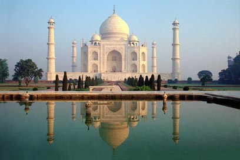
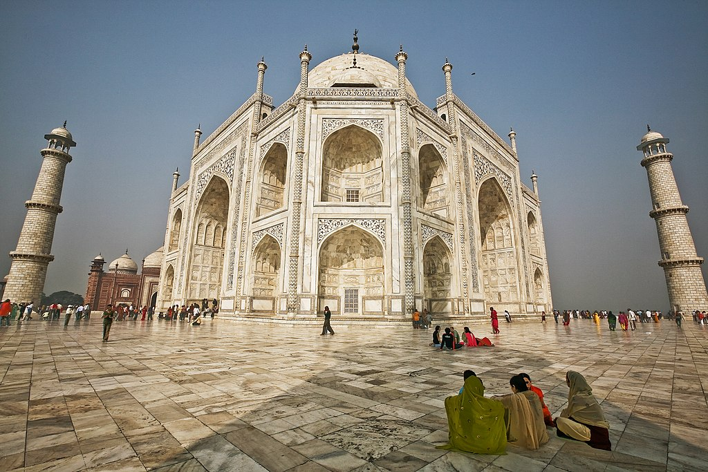
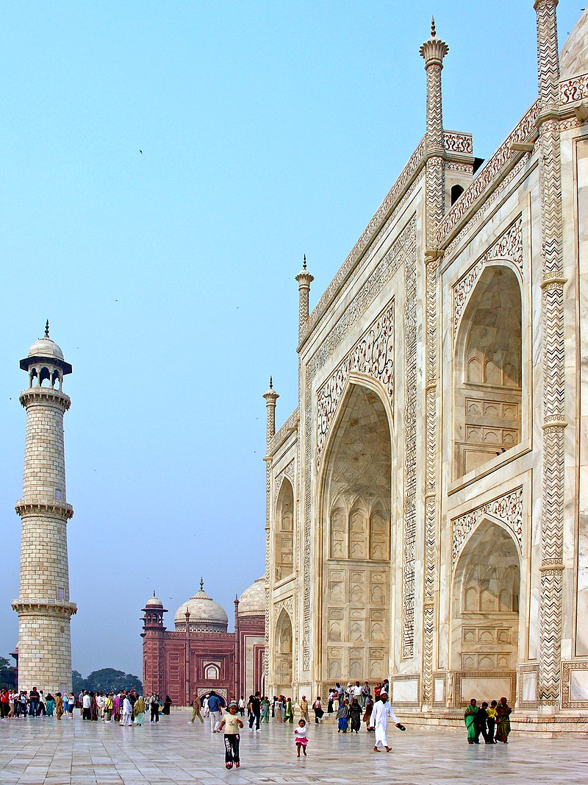

טג' מהאל

ארץ: הודו עיר: אגרה תאריך בנייה: 1631
המבנה משלב מוטיבים של אדריכלות מוסלמית בעיקר בסגנון האדריכלות הפרסית עם השפעות הינדיות. זהו מאוזוליאום שבנה קיסר האימפריה המוגולית שאה ג'האן כדי להנציח את אשתו השלישית והאהובה, ארג'ומנד באנו בגום, שנקראה מומתאז מהאל.


הטאג' מהאל, ששטחו כ-700 דונם, הוא מתחם שנבנה לפי כללי הסימטריה: אזור שער מפואר. גן המחולק לארבעה רבעים (צ'אר-באג) על ידי תעלות מים. אזור מרפסת מרוצפת שבצידה המערבי מסגד פתוח הפונה למכה, בצידה המזרחי ג'וואב ובמרכזה מבנה המאוזוליאום עצמו.